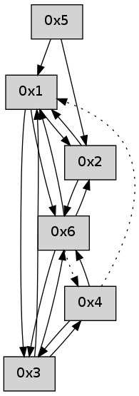

>> << IDX [start] -100 -25 -5 +0 +5 +25 +100 [525.229051113]
 Previous packets
----------------------------------------------------------------------
520.307967 beacon01(adaf) #0 coord=01,02,05,03,04,06 cycle=432.0ms assoc
-- color-indic=0 64 98 8b
520.317929 beacon02(adaf) #0 coord=01,02,05,03,04,06 cycle=432.0ms assoc 64 c9 74
520.327930 beacon05(adaf) #0 coord=01,02,05,03,04,06 cycle=432.0ms assoc 64 6f 5e
520.337931 beacon03(adaf) #0 coord=01,02,05,03,04,06 cycle=432.0ms assoc 64 f3 7a
520.347930 beacon04(adaf) #0 coord=01,02,05,03,04,06 cycle=432.0ms assoc 64 55 50
520.357929 beacon06(adaf) #0 coord=01,02,05,03,04,06 cycle=432.0ms assoc 64 21 4c
520.369612 [Hello(3): seq=319 sym=4,6,1 sysInfo= stat=4:1,0,0,0/6:1,0,0,0/1:7,0,0,0]
----------------------------------------------------------------------
520.800075 beacon01(adaf) #0 coord=01,02,05,03,04,06 cycle=432.0ms assoc
-- color-indic=0 64 d4 3b
520.810036 beacon02(adaf) #0 coord=01,02,05,03,04,06 cycle=432.0ms assoc 64 85 c4
520.820035 beacon05(adaf) #0 coord=01,02,05,03,04,06 cycle=432.0ms assoc 64 23 ee
520.830036 beacon03(adaf) #0 coord=01,02,05,03,04,06 cycle=432.0ms assoc 64 bf ca
520.840037 beacon04(adaf) #0 coord=01,02,05,03,04,06 cycle=432.0ms assoc 64 19 e0
520.850037 beacon06(adaf) #0 coord=01,02,05,03,04,06 cycle=432.0ms assoc 64 6d fc
520.864158 [Hello(1): seq=219 sym=2,6,3 sysInfo= stat=2:7,0,0,0/6:5,0,0,0/3:0,0,0,0]
----------------------------------------------------------------------
521.292184 beacon01(adaf) #0 coord=01,02,05,03,04,06 cycle=432.0ms assoc
-- color-indic=0 64 10 54
521.302145 beacon02(adaf) #0 coord=01,02,05,03,04,06 cycle=432.0ms assoc 64 41 ab
521.312145 beacon05(adaf) #0 coord=01,02,05,03,04,06 cycle=432.0ms assoc 64 e7 81
521.322146 beacon03(adaf) #0 coord=01,02,05,03,04,06 cycle=432.0ms assoc 64 7b a5
521.332145 beacon04(adaf) #0 coord=01,02,05,03,04,06 cycle=432.0ms assoc 64 dd 8f
521.342147 beacon06(adaf) #0 coord=01,02,05,03,04,06 cycle=432.0ms assoc 64 a9 93
521.353813 [Hello(3): seq=320 sym=4,6,1 sysInfo= stat=4:2,0,0,0/6:1,0,0,0/1:8,0,0,0]
521.357525 [Hello(6): seq=235 sym=3,1,2 asym=4 sysInfo= stat=3:0,0,0,0/1:11,0,0,0/2:2,0,0,0/4:0,0,0,0]
----------------------------------------------------------------------
521.784292 beacon01(adaf) #0 coord=01,02,05,03,04,06 cycle=432.0ms assoc
-- color-indic=0 64 c8 10
521.794254 beacon02(adaf) #0 coord=01,02,05,03,04,06 cycle=432.0ms assoc 64 99 ef
521.804253 beacon05(adaf) #0 coord=01,02,05,03,04,06 cycle=432.0ms assoc 64 3f c5
521.814253 beacon03(adaf) #0 coord=01,02,05,03,04,06 cycle=432.0ms assoc 64 a3 e1
521.824254 beacon04(adaf) #0 coord=01,02,05,03,04,06 cycle=432.0ms assoc 64 05 cb
521.834254 beacon06(adaf) #0 coord=01,02,05,03,04,06 cycle=432.0ms assoc 64 71 d7
521.845688 [Hello(1): seq=220 sym=2,6,3 sysInfo= stat=2:7,0,0,0/6:6,0,0,0/3:1,0,0,0]
521.849616 [Hello(4): seq=321 sym=6,3 asym=1 sysInfo= stat=6:1,0,0,0/3:3,0,0,0/1:9,0,0,0]
----------------------------------------------------------------------
522.276399 beacon01(adaf) #0 coord=01,02,05,03,04,06 cycle=432.0ms assoc
-- color-indic=0 64 0c 7f
522.286361 beacon02(adaf) #0 coord=01,02,05,03,04,06 cycle=432.0ms assoc 64 5d 80
522.296361 beacon05(adaf) #0 coord=01,02,05,03,04,06 cycle=432.0ms assoc 64 fb aa
522.306360 beacon03(adaf) #0 coord=01,02,05,03,04,06 cycle=432.0ms assoc 64 67 8e
522.316361 beacon04(adaf) #0 coord=01,02,05,03,04,06 cycle=432.0ms assoc 64 c1 a4
522.326362 beacon06(adaf) #0 coord=01,02,05,03,04,06 cycle=432.0ms assoc 64 b5 b8
522.338031 [Hello(3): seq=321 sym=4,6,1 sysInfo= stat=4:2,0,0,0/6:2,0,0,0/1:9,0,0,0]
522.341741 PARSE ERROR************************
Traceback (most recent call last):
File "PacketAnalysis.py", line 167, in showOperaPacket
structPacket = OperaPacketParse.parsePacket(rawPacket)
File "../../pkg-python/HipSens/Core/OperaPacketParse.py", line 461, in parsePacket
return parseHelloMessage(data)
File "../../pkg-python/HipSens/Core/OperaPacketParse.py", line 127, in parseHelloMessage
assert struct.calcsize("H")*len(neighAddrList) == len(linkList)
AssertionError
48 22 06 00 00 ec 00 02 02 06 03 00 01 00 02 00 01 02 04 00 53 04 00 00 00 00 4c 08 00 00 00 0c 00 03 00 00 4c a9
----------------------------------------------------------------------
522.768508 beacon01(adaf) #0 coord=01,02,05,03,04,06 cycle=432.0ms assoc
-- color-indic=0 64 40 cf
522.778469 beacon02(adaf) #0 coord=01,02,05,03,04,06 cycle=432.0ms assoc 64 11 30
522.788469 beacon05(adaf) #0 coord=01,02,05,03,04,06 cycle=432.0ms assoc 64 b7 1a
522.798470 beacon03(adaf) #0 coord=01,02,05,03,04,06 cycle=432.0ms assoc 64 2b 3e
522.808471 beacon04(adaf) #0 coord=01,02,05,03,04,06 cycle=432.0ms assoc 64 8d 14
522.818470 beacon06(adaf) #0 coord=01,02,05,03,04,06 cycle=432.0ms assoc 64 f9 08
522.829905 [Hello(1): seq=221 sym=2,6,3 sysInfo= stat=2:8,0,0,0/6:7,0,0,0/3:2,0,0,0]
522.833814 [Hello(4): seq=322 sym=6,3 asym=1 sysInfo= stat=6:2,0,0,0/3:4,0,0,0/1:9,0,0,0]
----------------------------------------------------------------------
523.260615 beacon01(adaf) #0 coord=01,02,05,03,04,06 cycle=432.0ms assoc
-- color-indic=0 64 84 a0
523.270576 beacon02(adaf) #0 coord=01,02,05,03,04,06 cycle=432.0ms assoc 64 d5 5f
523.280576 beacon05(adaf) #0 coord=01,02,05,03,04,06 cycle=432.0ms assoc 64 73 75
523.290577 beacon03(adaf) #0 coord=01,02,05,03,04,06 cycle=432.0ms assoc 64 ef 51
523.300576 beacon04(adaf) #0 coord=01,02,05,03,04,06 cycle=432.0ms assoc 64 49 7b
523.310577 beacon06(adaf) #0 coord=01,02,05,03,04,06 cycle=432.0ms assoc 64 3d 67
523.322262 PARSE ERROR************************
Traceback (most recent call last):
File "PacketAnalysis.py", line 167, in showOperaPacket
structPacket = OperaPacketParse.parsePacket(rawPacket)
File "../../pkg-python/HipSens/Core/OperaPacketParse.py", line 461, in parsePacket
return parseHelloMessage(data)
File "../../pkg-python/HipSens/Core/OperaPacketParse.py", line 127, in parseHelloMessage
assert struct.calcsize("H")*len(neighAddrList) == len(linkList)
AssertionError
48 1c 03 00 01 42 00 02 02 06 04 00 06 00 01 00 53 04 00 00 00 00 4c 06 00 03 00 03 00 0a 4c 20
----------------------------------------------------------------------
523.752725 beacon01(adaf) #0 coord=01,02,05,03,04,06 cycle=432.0ms assoc
-- color-indic=0 64 c9 a7
523.762686 beacon02(adaf) #0 coord=01,02,05,03,04,06 cycle=432.0ms assoc 64 98 58
523.772686 beacon05(adaf) #0 coord=01,02,05,03,04,06 cycle=432.0ms assoc 64 3e 72
523.782686 beacon03(adaf) #0 coord=01,02,05,03,04,06 cycle=432.0ms assoc 64 a2 56
523.792687 beacon04(adaf) #0 coord=01,02,05,03,04,06 cycle=432.0ms assoc 64 04 7c
523.802687 beacon06(adaf) #0 coord=01,02,05,03,04,06 cycle=432.0ms assoc 64 70 60
523.814390 [Hello(4): seq=323 sym=6,3 asym=1 sysInfo= stat=6:2,0,0,0/3:5,0,0,0/1:9,0,0,0]
523.823652 [Hello(1): seq=222 sym=2,6,3 sysInfo= stat=2:9,0,0,0/6:8,0,0,0/3:2,0,0,0]
----------------------------------------------------------------------
524.244833 beacon01(adaf) #0 coord=01,02,05,03,04,06 cycle=432.0ms assoc
-- color-indic=0 64 0d c8
524.254795 beacon02(adaf) #0 coord=01,02,05,03,04,06 cycle=432.0ms assoc 64 5c 37
524.264797 beacon05(adaf) #0 coord=01,02,05,03,04,06 cycle=432.0ms assoc 64 fa 1d
524.274795 beacon03(adaf) #0 coord=01,02,05,03,04,06 cycle=432.0ms assoc 64 66 39
524.284795 beacon04(adaf) #0 coord=01,02,05,03,04,06 cycle=432.0ms assoc 64 c0 13
524.294795 beacon06(adaf) #0 coord=01,02,05,03,04,06 cycle=432.0ms assoc 64 b4 0f
524.306459 [Hello(3): seq=323 sym=4,6,1 sysInfo= stat=4:4,0,0,0/6:3,0,0,0/1:11,0,0,0]
524.310162 [Hello(6): seq=238 sym=3,1,2 asym=4 sysInfo= stat=3:0,0,0,0/1:14,0,0,0/2:5,0,0,0/4:0,0,0,0]
----------------------------------------------------------------------
524.736942 beacon01(adaf) #0 coord=01,02,05,03,04,06 cycle=432.0ms assoc
-- color-indic=0 64 41 78
524.746903 beacon02(adaf) #0 coord=01,02,05,03,04,06 cycle=432.0ms assoc 64 10 87
524.756903 beacon05(adaf) #0 coord=01,02,05,03,04,06 cycle=432.0ms assoc 64 b6 ad
524.766903 beacon03(adaf) #0 coord=01,02,05,03,04,06 cycle=432.0ms assoc 64 2a 89
524.776904 beacon04(adaf) #0 coord=01,02,05,03,04,06 cycle=432.0ms assoc 64 8c a3
524.786903 beacon06(adaf) #0 coord=01,02,05,03,04,06 cycle=432.0ms assoc 64 f8 bf
524.798604 [Hello(4): seq=324 sym=6,3 asym=1 sysInfo= stat=6:3,0,0,0/3:6,0,0,0/1:10,0,0,0]